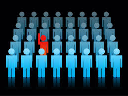

The Stereotype Threat
What is the Stereotype Threat
'Stereotype threat' is a theory in psychology that argues that a person can experience negative consequences based on their individual identification with a particular group in the wider society. We can experience 'subconscious handicapping' when we see ourselves at risk of confirming a negative stereotype that relates to an aspect of our individual identity. The classic experiments in this field have women math students performing at a lower level than their male counterparts when suggestions are made prior to the test that tap into stereotypes relating to women and maths. Similarly, black American students have been shown to be negatively affected in academic tests if they believe they are at risk of confirming a negative racial stereotype relating to intellectual performance.
Stereotype threat is not limited solely to gender and race issues, it can be experienced by an individual of any group or sub culture that is subject to a negative stereotype. This may include age, sexual orientation, religious beliefs and a socio-economic status. The affects of the threat of stereotyping is an internalised individual response based on fear, it is a self sabotaging phenomena rather than the real effect of the stereotype applied by the wider community.
My experience of Stereotype Threat
I think that everyone has experienced stereotype threat at some point in their lives. Some individuals will experience it constantly and for some it will have had huge negative impacts on their lives. On a personal level I have had various experiences where I know I have self-sabotaged as a result of the discomfort and fear of confirming a stereotype relating to one of the facets of my identity. For the purpose of this exercise it is easy to focus on the gender aspect of my work in the IT industry. I have the habit, when at IT industry functions, of doing a quick head count to ascertain the ratio of males to females in attendance. At the last event, which is representative of the norm, I believe there were 4 women in a group of around 100 participants. While feeling uncomfortable and outnumbered is not actually a stereotype threat in itself, it is when you find yourself behaving in a way that is limiting or uncharacteristic that the phenomena becomes relevant. I find that I avoid asking questions for fear of confirming stereotypes, and then I scuttle away as soon as I can, and so avoid the need to expose my level of knowledge and thus fall right into the traps of the classic stereotype threat.
What can be done
Awareness and education are two key strategies to combating the negative impacts of stereotype threat. If you are aware of situations that put you at risk of experiencing stereotype threat and the triggers that produce the self-sabotaging response then you can begin to counter it's negative impacts. Two earlier bootcamp readings come to mind here, the first is the role of practice in achieving confidence and the second is the role of 'tiny habits'. If you are aware of the situations that lead to your own reaction to stereotypes then you can practice a response and self visualise a better outcome and a means to combat the negative effects. Discussion with others who might be in a similar position or likely to experience the same stereotype can help.
Where others are concerned, you can assist with the minimisation of the stereotype threat for them by acknowledging the existence of this potential and talking about it. There may be some role for affirmative strategies and some ways to lessen the obvious effects for minority or disadvantaged groups. Stereotype threat is about an individuals response to a negative stereotype so it's effects can be challenged one individual at a time. In this way the stereotype itself will eventually be disproved.
Feedback and the environment
I am assuming that mention of feedback in this context relates to how we give feedback to our cohort and how we in turn receive feedback. Being mindful of stereotyping and the direct and, in this case, indirect effect it can have both on ourselves and on our classmates is important. Our feedback should be framed in such a way that we avoid any potential stereotyping and give and receive it in an open and respectful way.
Our general learning environment should also be open and friendly with all participants valued and welcomed. Simple things like greeting and farewelling individuals as they come and go. Smiling and making eye contact. Choosing to work with a wide range of people. Encouraging and supporting all participation, while not appearing insincere and patronising. It always comes back to respect.